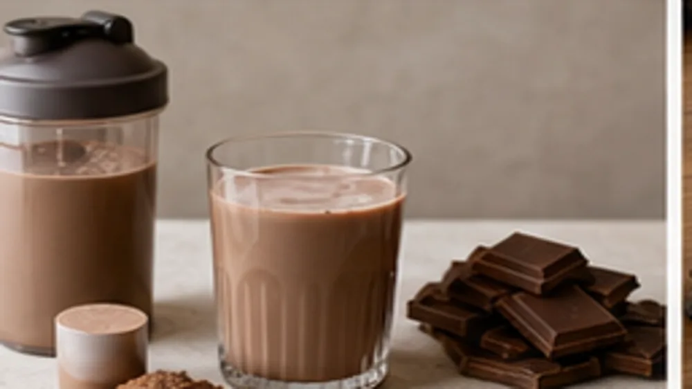
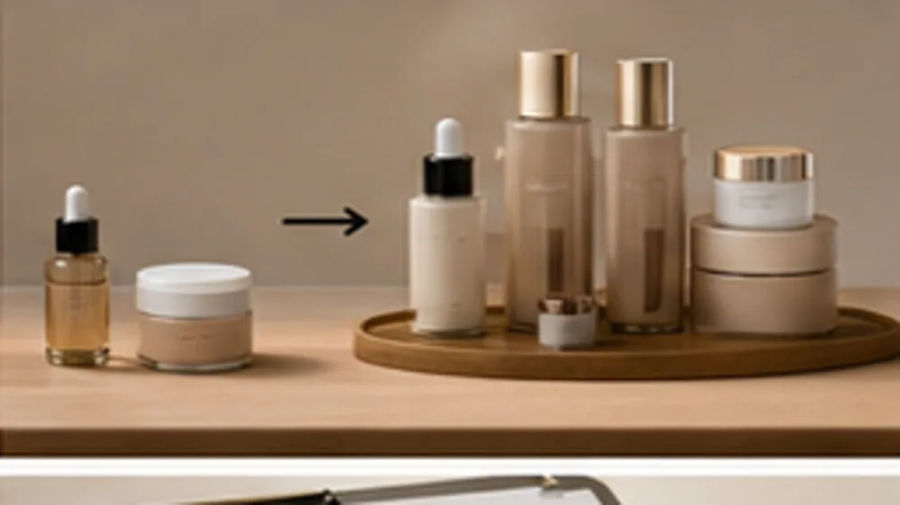

같은 상품인데
왜 저기는
더 비싸게 팔릴까?
살 이유의 차이
기능도 괜찮고
품질도 자신 있는데
설명할 때는 결국
“가성비 좋아요”만 남는다면.
가격을 깎기 전에
고객이 우리 상품을
고를 이유부터.
컨셉 설계법
같은 기능도
살 이유는 달라집니다.
수건
머리 말리는 시간을
줄이는 드라이 수건
탈취제
냄새를 먹는다
단백질 쉐이크
밤 10시 과자 대신
타먹는
단백질 초코우유

책에 실린 컨셉 예시입니다.
실제 판매 성과 자료는 아닙니다.
책에서 연습하는 건
좋은 기능을 나열하는 말에서
고객이 쓸 장면을 담은 말로
바꿔보는 일입니다.
말만 바꾸면
컨셉이 될까요?
눈에 띄는 표현을 찾기 전에
그 말을 믿을
근거부터.
이 표현도 작용 원리를 먼저 확인해요. 눈에 띈다는 이유만으로 내 상품에 그대로 붙일 수는 없으니까요.
기능은 어디까지 사실인지
고객은 언제 필요로 하는지.
책에서는 둘을 함께 따져봅니다.
지금 파는 상품에서
살 이유를 찾는
5가지 관점
성분 이름을 넘어
기능이 쓰이는 장면
기능이 좋다는 말은
경쟁 상품에도 있습니다.
고객이 그 기능을 쓰는 순간까지
구체적으로 떠올려 보세요.
어떻게 줄일까?
기름때 제거고기 구운 팬의
미끌거림을
끊어내는 세제
왜 다른 사람 말고
내가 파는 상품일까?
내가 해본 일
오래 겪어본 문제
상품을 고를 때 보는 기준.
실제 경험에서
고객이 믿을 이유를 찾습니다.
이 상품을 고르는
고객의 자기 모습
고객이 피하고 싶은 모습과
되고 싶은 모습을 적어봅니다.
누구나 쓰는 상품에서
내 기준에 맞는 상품으로.
그냥 선크림극한 환경에서
피부를 지키는
우주비행사 선크림
고객의 하루 속
꼭 필요한 순간
찾게 될까?
상황을 구체적으로 잡으면아침에 밟히는
고양이 모래를 줄이는
화장실 앞 모래 매트
첫 구매 다음까지
구매가 이어지는 구조

처음 써보는 입문 상품
제대로 쓰는 본품
다시 찾는 재구매.
각 상품의 역할을 나누고
서로의 관계를 그립니다.
상품 표현은 책 속 설계 예시입니다.
내 상품에는 확인된 기능과 근거만 사용하세요.
읽은 내용을
내 상품에 옮기는 시간.
읽은 만큼
내 답이 남게.
기능 컨셉 실습표책 본문 예시 재조판
단백질 쉐이크
단백질 함량, 칼로리, 가격,
유명 브랜드
가루형 초코우유
야식 대체 음료
초코우유처럼 맛있게 마시는데,
단백질까지 채워지는 한 컵.
AI와 함께 고민할 때도
질문에
기준이 필요합니다.
AI가 후보를 내면
나는 근거를 보고
고릅니다.
이 책을 쓴 사람
직접 팔아온 경험을
한 권의 기준으로.

2021년부터
쌓아온 매출.
각 시점까지 쌓인 매출 기준
(주)메이크프렌즈 노션 월별 원장
사례를 읽고 끝내지 않도록
내 상품에 적용할 질문까지
함께 담았습니다.
책과 내 상품 정보를 함께
읽고 · 넣고 · 물어보기
내 상품에는 어떻게 적용하죠?
먼저 책을 읽고
컨셉을 보는 기준부터
기능 · 판매자 · 고객 정체성
상황 · 구매 구조.
지금 내 상품에 필요한 장부터
실습 질문을 따라가 보세요.
AI용 책 파일을
대화에 직접 첨부
고객 노트북·물병·충전기를 들고 출근하는 사람
내 상품으로 질문하고
근거를 보고 고르기
책의 어떤 내용을 참고했는지
없는 기능을 덧붙이지 않았는지.
답을 확인하고
내 기록으로 남기세요.
웹 AI는 내 컴퓨터 폴더를 알아서 읽지 않아요.
파일을 대화에 직접 첨부해야 합니다.
책을 읽는 것부터
내 상품에 적용하는 것까지
한 권에 담았습니다
패밀리 라운지에서 읽는
컨셉의 정석 본문
다섯 관점으로 찾는
우리 상품의 구매 이유
컨셉의 정석
구매 전 기준까지 연결합니다.
내 상품으로 채우는
실습표와
컨셉 100개 설계 노트
읽은 내용이
내 답으로 남도록
내 상품의 컨셉
실습 흐름을 요약한 예시입니다.
내 AI와 함께 쓰는
책 파일과 질문 예시
책 기준을 첨부하고
내 상품으로 연습
상품은 준비됐는데
팔 이유가 막막한 분께.
경쟁 상품과 다른 점을
설명하기 어려운 분
우리 상품을
한 줄로 정의하기 어려운 분
성분과 기능을 적어도
결국 가격 얘기로 돌아가는 분
구매 전 범위를 확인해 주세요.
아이템 소싱 목록이나
광고 세팅 매뉴얼을 찾는 분께는
맞지 않습니다.
꺼내 쓸 수 있도록.
상품이 달라지면
같은 질문에
새 답을 적으세요.
기능을 살피고 고객의 상황을 찾고
구매로 이어지는 구조를 그립니다.
이번 상품에도 다음 상품에도.
컨셉의 정석 본문 · 실습표
컨셉 100개 설계 노트
AI에 넣을 책 파일
자주 묻는 질문
예시에 없는 종류면요?
아닌가요?
못 따라 하나요?
광고 운영도 나오나요?
준비한 상품이 있다면
이제 살 이유를
설계하세요.
같은 상품,
비싸도 팔리게.
30,000원에 받기구매 전 안내
책에 실린 사례와 부록 예시는 컨셉을 설계할 때 참고하는 예시예요. 실제 판매 성과 자료가 아니고 같은 결과를 약속하지 않아요. 내 상품에는 실제로 확인된 기능과 근거만 써 주세요.
AI용 책 파일은 챗GPT·클로드 같은 웹 AI에 직접 첨부해야 읽혀요. AI가 책을 영구히 기억하거나 알아서 실행하지는 않아요.
저자 이력은 메이크패밀리 회사 소개, 회사 실적은 (주)메이크프렌즈 노션 월별 원장 기준이에요.
디지털 파일 상품이라 결제 후 환불되지 않아요.